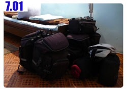

夜裡睡得還不錯，這邊的小店營業得超晚，凌晨兩三點還能聽到客人來用餐的聲音，做這種路邊小吃店的生意真是辛苦。
睡醒之後覺得身上佈滿了彈簧床的紋路，有些關節好像脫臼後又重新組合了一樣。
拎著毛巾和牙刷去梳洗，店門口那個洗手抬上面的儲水箱裡頭飄著三隻像蜻蜓、兩隻像飛蛾的昆蟲，發呆看了三秒鐘。
決定假裝沒有看到這些在泡澡的昆蟲，依然用這些水洗臉刷牙，入境隨俗，不能適應的話接下來要怎麼在哈薩克生活呢。
昨天用店裡燒來泡茶的熱開水裝在水壺裡準備今天要喝，其實說不定這邊的水根本就不能生飲，但是因為水源很缺乏，所以有水就喝，誰管它乾不乾淨。
燒開的水感覺比較令人心安，但是喝起來的味道真得很奇怪，有種奇異的黏稠感，很像在喝水族箱裡的水。
為了蓋過這個奇怪的味道，所以我在水壺裡加了好幾湯匙的砂糖，這樣喝起來應該會好一點。
六點半，太陽剛爬出山頭，趁著天氣還不熱的涼快早晨，趕緊出發吧～
昨天就打聽到今天計劃要騎的九十公里路，又是上上下下的坡路，很消耗體力的地形。
昨天買了兩盒果汁，還剩下半盒不到沒喝完，就冰在小店的冰箱裡面，早上去拿的時候已經結凍了，
不知道要塞到包包的什麼地方，只好拿在手上，等融化了才有辦法喝。
早餐吃了一條熱狗、幾片餅乾、配著沒剩幾口的果汁，包包裡的儲糧又漸漸歸零，該準備補充了。
雖然從小路接回了大馬路，但是路況並沒有之前走錯的那一條，通往吉爾吉斯坦的路那麼好，只能算是普通而已，但是跟被流星雨打到的爛路相比已經算好太多了。
這個就是哈薩克的道路距離指示牌，是柱子狀的，設計成斜角，寫了兩種數字，兩側駕駛人看到的距離標示都不一樣。
這條路還有兩千多公里可以騎，不知道路的終點是哪？
這裡的景色一整個早上都是千篇一律，一條馬路，兩旁都是長著黃色短草的草原，除了一望無際之外的荒原之外。
什‧麼‧都‧沒‧有
要是覺得現在騎的路不怎麼樣，不要緊，這個複合的標示很明顯的說明了接下來還有五十公里的路可以讓我吃足口頭。
車輛零零星星的經過，車流很稀疏，真不敢相信這是連接兩座大城市的主要道路，真的是待越久對哈薩克越不了解。
路上的動物屍體有了變化，被壓扁的蛇好多呀>"<大條的小條的都有，除了蛇之外，也看到活生生的蠍子和超大隻的蜥蜴過馬路。
看來這個草原裡面很不安全，如果不是走投無路，我會盡量避免在野外露營，以免夜裡有什麼奇怪的東西跑來和我一起睡覺。
路上的告示牌很簡單，我的下一個目的地，阿斯塔那，距離已經剩不到一千公里，估計七月上旬就可以到達。
路上有一些標示著河流的告示牌，連橋也有模有樣的搭了起來，但是橋下面除了沙子和草原，根本就連一滴水也沒有。
四周的景色，要不是正在綠化中的沙漠，那就是正在沙漠化中的草原。
從昨天落腳的小店出發，騎了九十五公里的路，沒有絲毫人煙，隨著時間的經過，太陽爬升越來越高，溫度也讓身上再度的汗濕了起來。
口渴的時候就只能喝著口感跟味道都很奇怪的甜開水，在烈日曝曬下的乾渴，就算真的只有水族箱的水，我也會拿來喝。
中午的時候終於又出現人類的建築物，一棟破破的加油站，商店已經停止營業，一間餐廳，好加在還有開。
先去裡面買一公升裝的汽水，一路上都在幻想著等一下喝冰涼飲料時嘴巴的口感，想到都快要發瘋了，真的大口灌進嘴裡的時候，只有一個爽字！

小多實在太可憐了，現在中午休息的時候我也會將包包都卸下來，我自己則換上舒服的拖鞋，長褲也脫掉。
讓小多跟我利用中午的時光好好的休息一下。
吃飯一樣比手畫腳請餐廳的人幫我張羅，這樣有點麻煩別人，還要猜我想吃什麼，會不會送上來的東西不合我胃口之類的。
但是不論送什麼東西上來都很好吃，因為我肚子很餓。
午餐很豐盛，紅紅的那個湯就像是昨天在小店晚餐吃的那個酸湯，裡面有很多的高麗菜絲、馬鈴薯跟燉羊肉。
放著大塊肉的肉醬通心麵、乾硬的麵包、還有冰涼的可樂。
全部一掃而空之後還是沒吃飽，看鄰桌的客人點了好像不錯吃的炸魚，就跟著要了一份，配上切片的洋蔥，灑上胡椒之後很好吃。
這麼豐盛的午餐，只要六百元而已，雖然是偏僻地方的餐廳，但是沒有瞞天喊價，是個良心好店。
如果真的有人閒著沒事跑到哈薩克來的話，可以到這邊吃午餐，價錢適中、味道很好～
烈日當頭，日正當中，吃飽後在餐廳的涼快屋簷下睡了午覺，這邊也有昨天睡的那種彈簧床，在這邊充分的休息。
時間還早，今天沒有打算住在這裡的意思，只是休息的時間比較長而已，下午四點準備出發，往下一個不知道有沒有比這裡還舒適的地方騎去。
臨走前拿著空空的水壺跟老闆娘裝開水，從她那裡得知再繼續往前騎個七十公里，就會有旅館可以過夜。
其實有沒有旅館我已經不是那麼介意，依現在的情況，我最最需要的排行榜第一名為商店，可以讓我有的吃喝。
第二名則是餐廳，這樣就能吃美味一點的熱食，第三名才是旅館，能夠洗個舒服的澡、洗衣服、睡大頭覺。
即使拖到下午四點才走，太陽依然很熱情，這邊的司機開車穿著都很酷，打赤膊是最基本的，脫到只剩下一條內褲都有。
而且下車的時候就只穿著內褲出來，但是要加油還是買東西都是穿著一條內褲就到處跑透透，很有趣的畫面。
從離開餐廳開始，就颳起了逆風，路況雖然和早上一樣是上上下下的坡道，四周景色也沒有多大變化，但是騎起來就累很多。
一直騎了四個小時肚子咕嚕叫了才停下來休息一下，以為騎的這麼累，應該有爬升一些海拔高度吧？
結果反而是降低了海拔，在逆風的摧殘下，即使是下坡騎起來也跟上坡沒兩樣，好像在糨糊堆裡騎車似的，有種黏滯不前的痛苦。
小多靠著石頭休息一下，這邊沒有樹木，地勢也平坦，想靠在別的地方都沒的選。
我則往回頭走回剛爬上來的山坡，往下鳥瞰真是一整個超級荒涼，未免也太空曠了吧～
將近九點時，太陽開始西下，沒有人管、自由放牧的馬匹捲起迷濛的沙塵在夕陽下走過馬路，好像做夢一樣的畫面。
四周寂靜的枯黃草原裡，在太陽西下之後從四面八方冒出了數也數不清的蝗蟲，非常大隻，到處流竄、無聲的飛舞著。
地圖上看了好幾天的大湖，終於也露了面，接下來就要沿著湖岸騎車到中部的大城市，期待湖景的美麗。
終於在太陽沒入地平線之前，騎到了餐廳老闆娘所說的有旅館的小鎮。
一進來的第一棟建築物難得不是加油站，而是擺著一截長車廂的餐廳，同時也經營著旅館生意。
跑進去問一下過夜的價錢，要是不太貴的話就住下來吧，請員工將價錢寫在筆記本子上，他們寫了阿拉伯數字的1000元。
非常非常的便宜，居然只要一千元就可以住一晚上，之前在阿拉木圖的郊區，一個晚上就要兩千五，光是休息一小時也要七百元說。
確認一下這是睡一晚上的價錢，超開心得把小多和行李搬到房間裡面，有舒服的床和涼快的電風扇。
員工帶我認識一下環境，因為房間裡面沒有淋浴的設施，我做了洗澡的姿勢，問能不能洗澡？
他就帶我去一間大大的浴室，可能因為這裡靠近湖區，有著無限供應的水源，一扭開把手就是源源不決的滾燙熱水。
髒兮兮的衣服終於有藥可以治療了，只留一條乾淨的四角褲自己穿，其它不管是睡衣還是騎車穿的衣服，一併拿去泡熱水加洗衣粉。
給它洗得乾乾淨淨，我自己也趁衣服在泡熱水的時候，洗了好舒服的熱水澡，毛巾沾著熱水從身上將累積多日的汙垢洗去，整個人有煥然一新的感覺。
晚餐去火車廂的餐廳吃飯，這邊用晚餐的時間大多在十點之後，裡面人聲鼎沸，生意很好～看來一定有它吸引客人的地方。
真希望我的哈薩克語能夠進步的快一點，菜單一樣看不懂，但是每次用餐之後我就會記錄下食物對照的菜名，這樣下次想吃還可以點的到。
請婆婆送上好吃的菜，看到其它的客人都能流利的點餐，相當的羨慕，我會自己點的東西就只有奶茶而已~_~
哈薩克人其實長的就是歐美人士加上俄羅斯人的感覺，很少看到亞洲面孔。

每次用餐都會點的奶茶，這次忘了比一壺的手勢，結果只送來一杯，配著好吃的麵包，吃不夠還可以追加，奶茶也可以續杯的喝。
主菜則是清燉羊肉配上通心粉，這裡的羊肉料理的就很棒，沒有腥味，而且肉質很好，鮮嫩多汁，配上通心粉可以吃得很飽。
只要吃肉的話好像都會配上洋蔥切片，這樣就算不是為了防止蛀牙，為了好口氣著想飯後一定要記得刷牙。
飽飽的吃完這一餐，身體乾淨的會散發香氣、衣服也正在晾乾當中，肚子圓滾滾的很幸福～
今天一口氣騎了兩天的距離，哈薩克跟中國一樣，在早上的時候風勢都不明顯，一直到過了中午才開始颳風，好好的休息一晚上，明天要去遊湖囉～
繼續閱讀：7.2 傑斯塔後山
哈薩克-堅戈－ 1：0.26 台幣
7.1
總計：2430元
午餐高麗菜酸湯、肉醬通心麵、炸魚塊、麵包、可樂750元，旅館1000元、果汁250元、晚餐羊肉通心麵、奶茶、麵包430元